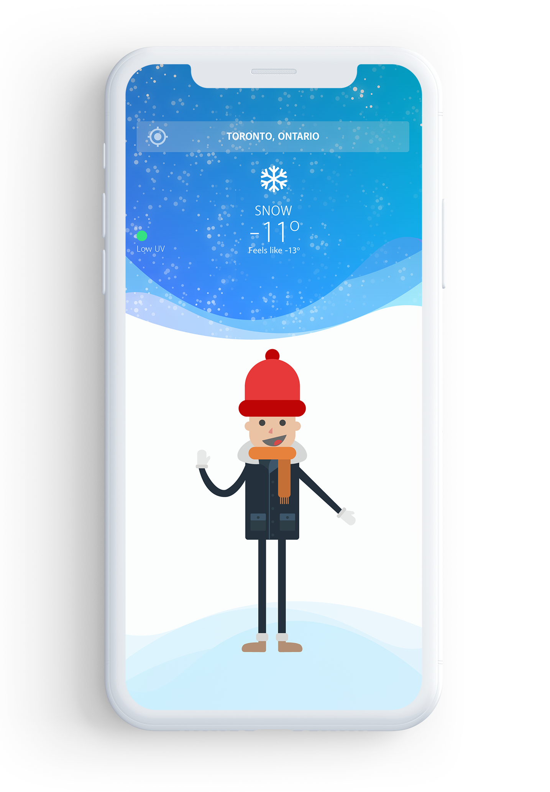
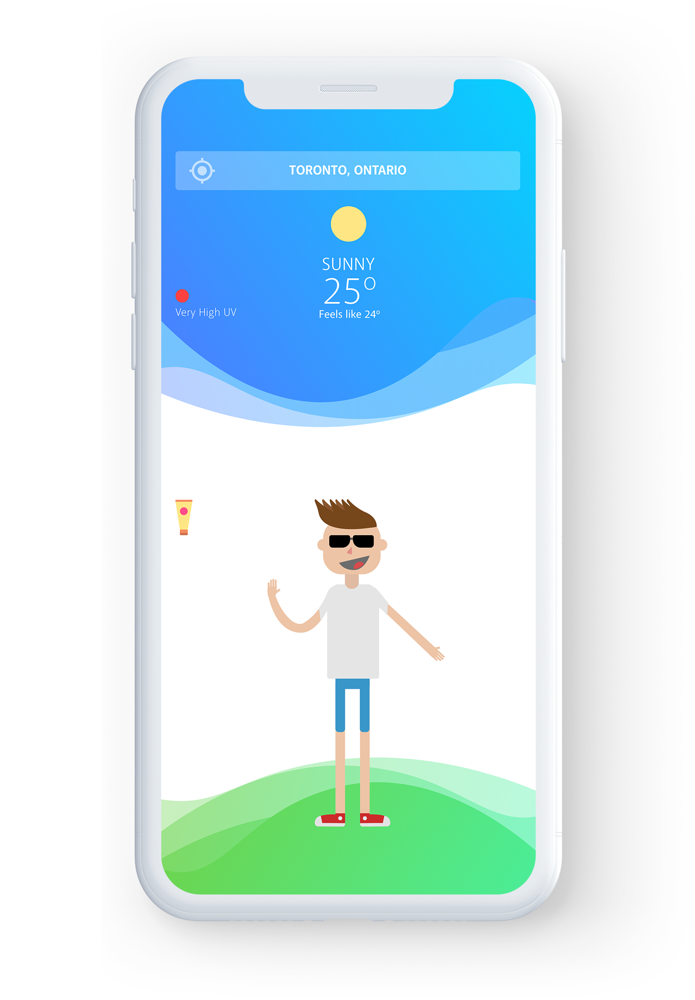

Thunderwear helps you optimize your morning routine and be prepared to face the elements by showing you what to wear according to the current weather.


A location-based single screen app, Thunderwear gives you all and only the information you need to pick the right clothes and accessories to slay the day.
Thunderwear
Thunderwear started as an idea for a Javascript assignment. It received amazingly positive positive feedback from my peers and faculty, so I decided to test its hypothesis with User Research and improve on the design.
My Role
UX Researcher and Designer
Goal
To validate the product hypothesis and design an MVP for a first iteration.
Type & Duration
Personal Project - 3 weeks
Process

Hypothesis
If users can find out what clothes & accessories they should wear according to the current weather, in an easy and intuitive way, their morning routine will be improved by:
Minimizing decision making that might result in decision fatigue.
Ensuring that they will better enjoy their day by not be underdressed or overdressed.
Research Objectives
To validate the research hypothesis.
To explore missed opportunities or problems that people might have when checking the weather and preparing to leave home.
Literature Review
An emerging body of science indicates that making decisions may possess negative ramifications for controlling ones’ behaviour and the quality of subsequent decisions. Evidence suggests that individuals experiencing decision fatigue demonstrate an impaired ability to make trade-offs, prefer a passive role in the decision-making process, and often make choices that seem impulsive or irrational (Pignatiello, Martin, & Hickman, 2018).
Akin to muscle fatigue after exertion, humans deplete internal resources when performing acts of self-regulation, such as processing information to formulate a decision (Pignatiello et al., 2018).
According to Hirshleifer, Levi, Lourie & Teoh, evidence in the psychology suggests that decisions made under pressure, distraction or fatigue, tend to be made heuristically - that is, using quick cognitive processes, thus affecting the quality of these decisions.
Research also shows that awakening from sleep is followed by disrupted cerebral and cognitive functioning that lasts for at least the first half hour following awakening (Vallat, Meaner, Nicolar & Ruby, 2019).
Awaking is followed by disrupted cognitive functioning.
Low-quality decisions are made when cognitively impaired.
Non-heuristic decisions add up towards decision fatigue.
TThe literature review validates the assumption that removing the cognitive process of looking at the temperature, processing the information and rationalizing about the appropriate clothes might be beneficial. Literature suggests that giving users an easy and intuitive way of picking their clothes will improve their morning routine and help ensure that they won’t leave home under or overdressed.
Survey
An online survey was conducted with 20 Canadians from different regions within Canada, to gather quantitative data and identify different habits when checking the weather and planning what to wear on a daily basis.
Were given access to the survey, Canadians that regularly leave home for work or school and stay out for at least 4 hours.
70%usually or sometimes are underdressed or overdressed
40%need to better decide what accessories or clothes to wear
Winter
People check the weather most often & feel more underdressed/overdressed.
Summer
People check the weather least often & feel less underdressed/overdressed.
Interviews
Three interviews were conducted with potential users to gather qualitative data about their morning routine and identify problems or missed opportunities.
Weather & Morning Routine Facts
During the interviews, participants confirmed that checking the weather is one of their first activities right after waking up. Contrary to most participants, one interviewee stated that they don’t check the weather during the winter:
If it’s middle of winter, I just put any heavy winter clothing. During any other season, I check the weather and dress accordingly.I wake up, get my phone, check the news, check Reddit, see how the temperature is and then I get up.I like to see the breakdown hour by hour so I know exactly what I need to bring to survive the day.
Expectations & Current Apps
Regarding their current weather apps (70% of the survey respondents use The Weather Network), all participants agree that they’re slow and cluttered. They also shared what information is important other than the temperature:
I expect to see whether or not it’s gonna rain. Oh, and I also check the UV index. It doesn’t really matter for clothing, but I do like to know if it’s extremely bad and I’m gonna need sunscreen.There’s too much information. I just need to decide what I am going to wear but there is a lot of ads. Also, the breakdown of hourly or 36 hours is kinda confusing. They’re slow, too much information I don’t need, like news, ads and other user’s content. I don’t need to see images of people’s sunflowers.
Personas
Based on the information gathered during the survey and interviews, three personas were created to guide the process of ideation and concept design & development.
Mark
Age35 years old
GenderMale
OccupationSoftware Developer
TechSpeaks binary and hex
Weather appQuickly checks the weather before leaving home
Pain Points
Has trouble waking up.
Very sleepy and slow in the morning, doesn’t make good decisions.
Forgets to bring accessories, especially in the winter — "man, how my forehead hurts!".
Walks 20 minutes between subway and work.
Pam
Age50 years old
GenderFemale
OccupationSales Director
TechEveryday use of smartphone
Weather appQuickly checks the weather before leaving home
Pain Points
Very fast-paced life.
Has to make several big decisions related to work through the day, is always looking for ways to minimize stress.
Good at morning routine, is never late.
Drives to the office and back home. Doesn’t feel underdressed very often.
Zoe
Age24 years old
GenderNon-binary
OccupationFull-time student + 2 jobs
TechHardcore instagrammer
Weather appChecks the weather while battling to wake up
Pain Points
Studies a lot. Works a lot.
Can’t sleep — can’t wake up.
Tries to get ready in 20 minutes in the morning.
Usually forgets her umbrella.
Wishes she would have fewer decisions to make in a day, especially in the morning.
Insights
The main reason people use weather apps is to decide what to wear.
People usually check the weather right after waking up.
People are not decision-making efficient right after waking up.
Although most people use weather apps every day, they’re usually not properly dressed for the current weather.
The most used weather apps have too much information on them, are cluttered — and don’t actively help users make better decisions.
Making heuristic decisions in the morning add up towards cognitive overload throughout the day.
How might we design a weather app for people that leave home every day for work or school that effectively helps them be prepared to face the weather while minimizing decision-making?
Task Analysis
The data obtained during the qualitative study feeds the "before" scenario of the task analysis below. The "after" scenario shows how Thunderwear would lessen the number of decisions needed:
Before
Wake up
Get smartphone
Open weather app
Look at temperature
Decide appropriate clothes
Decide appropriate accessories
Pick clothes
After
Wake up
Get smartphone
Open Thunderwear
Look at temperature
Look at recommended clothes & accessories
Pick clothes
Decision-making step
Non-decision improved step
Ideation
At the start of my ideation session, I took some time to review the goals, insights and constraints set by the research so far. I then put those facts into post-its and did a session of Crazy 8’s and ended up with two solutions\.
Narrowing down
Having sketched out Solutions 1 and 2, I decided to share the early concepts with some friends for input. As I thought, Solution 1 wasn’t quite getting there, because of being text-heavy. I, then decided to prototype Solution 2 - which relies on minimal weather info and an illustration.
App Design - Phase 1
Ideally, having in mind the individuality of how each user experiences the weather, the design would feature a way for customizing the outfit depending on the temperature.
But I had the constraint of having to develop a single-page app in one week. So, for the first prototype, I decided to interview a few friends to get a sense of the average breakpoint where they decide to dress lighter or heavier.
The concept relies heavily on the Illustration so after identifying the breakpoints and the corresponding average outfits, I started to work on creating the character. These are the breakpoints and their corresponding outfits (temperature in Celsius):
Because of limited time, I decided to make the first prototype leaner and test only the clothing aspect of the app and build on that later on — no accessories for now.
As the app relies on a quite simple interface, I decided to skip the high-fidelity wireframes and built a simple working prototype in Javascript.
Usability Testing
Three Think-Aloud sessions were run with friends that had also participated in the questionnaire.
Tasks
Decide what you should wear according to the current weather in your current location.
Decide what you should wear in a specific city (-15º scenario).
Decide what you should wear in a specific city (-5º scenario).
Decide what you should wear in a specific city (5º scenario).
Decide what you should wear in a specific city (15º scenario).
Decide what you should wear in a specific city (25º scenario).
Steps
Context: Imagine you’re leaving home to a meeting in Kingston. You have to figure out what kind of clothes to wear according to the current weather in that city.
Open the Thunderwear app.
Select the city "Kingston".
Tell the moderator what clothes you would pick according to the weather.
Recommendations
Improve the Illustrations of scenarios "Less than 0º" & "Less than 10º" — most participants found it hard to identify the clothing difference.
Visualize what are the accessories needed (including sunscreen, glasses, umbrella, etc).
The app should start-up in the current location.
There should be an easy way to come back to the current location.
Add rain and snow to illustrations to minimize reading.
App Design - Phase 2
As an input to the first development iteration, I designed an improved UI – with clear and better visual identity, incorporating a few of the recommendations from the usability testing sessions.
Limitations & Takeaways
Team Work: Some stages of the process could have resulted in totally different ideas if I had a team to collaborate with — especially at the stage of ideation and concept design.
Literature Review: There isn't a huge amount of data about how small decisions affect the bigger picture of decision-fatigue (most of the studies I found are from 2017-2018).
Target Audience: Journey Maps would have helped communicate how Thunderwear impacts the mood and morning experience of the personas.
Validation: A bigger usability testing for a concept such as this one is ultimately necessary — here I was limited by time and resources. Benchmarking Thunderwear against traditional weather apps mentioned in the survey to measure the performance of the user when choosing their outfit would be an interesting metric. It would also be valuable to look at the broader picture — in a scenario where someone uses Thunderwear on a daily basis, how does the improvement of that morning decision affect the overall mood or cognitive performance throughout the day? Are avid users forgetting fewer accessories and leaving home better prepared for the current weather?


{kind=link}
{kind=link}
{kind=link}
{kind=link}
{kind=link}
{kind=link}
{kind=link}
{kind=link}